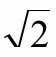
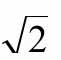
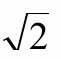
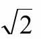
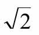
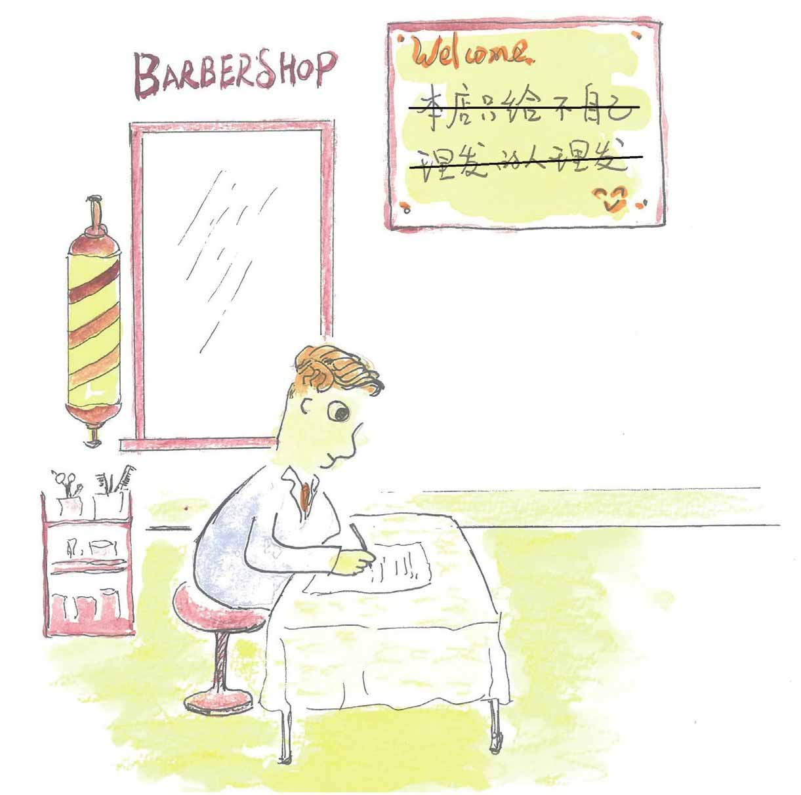

理发师给自己理发吗？
小文，前面我们说，在康托尔刚提出他的集合理论的时候，曾遭到许多人的猛烈攻击。但渐渐地，数学家们发现，数学的一些研究对象，比如自然数、实数、函数等，其实都是一些特定结构的集合，他们还发现康托尔提出的一套数学概念，诸如：并集、交集、属于、包含之类，其实为他们提供了一种“新”的数学语言——并且还十分好使。接下来他们更惊奇地认识到，似乎一切数学成果都可以建立在集合论的基础之上。
看来，康托尔的集合理论并不只是“上帝的数学，应该属于上帝”啊！
到后来，数学家庞加莱也不再认为康托尔的集合论是一种疾病了，态度来了个180度大转弯，他兴高采烈地宣称：“……借助集合论概念，我们可以建造整个数学大厦……”
集合论俨然已成为现代数学的基石。
可是，好景不长。不久人们发现，这套集合理论是有漏洞的！为了形象地说明集合论中的一个漏洞，数学家罗素提出了一个著名的悖论。
罗素首先构造了这样一个集合S，S由一切不属于自身的元素构成的集合即S=｛x丨x∉x｝，然后，罗素问：S是否属于S呢？
为了更加通俗易懂，罗素将这个问题改写为“理发师悖论”。
罗素不仅是数学家，还是作家，他获得过1950年的诺贝尔文学奖。
经罗素妙笔构思后的“理发师悖论”是这样说的，在萨维尔村，一位理发师挂出一块招牌：“本人理发技艺高超，我将为本村所有那些不自己理发的人理发，并且我也只给这些人理发。”
来找他理发的人络绎不绝，当然，这些人都是不自己理发的人。
有一天，有人看到理发师自己的头发很长了，就好奇地问他：“理发师先生，您给不给自己理发啊？”
那我们来推理一下：如果理发师不给自己理发，他就属于招牌上指明的“不自己理发的人”的那一类人，有言在先，那么他应该给自己理发。
但是，如果这个理发师给自己理发，根据招牌所言——他只给村中不自己理发的人理发——那他就不能给自己理发啦！因此，无论这个理发师怎么做，都会跟那块招牌产生矛盾。
其实在罗素之前，就有数学家发现了集合论存在一些问题。1897年，布拉利·福尔蒂（C.Burali-Forti）提出了“最大序数悖论”。1899年，康托尔自己发现了“最大基数悖论”。但是，这两个悖论的出现都没有在数学界引起多大的震动，所以并未动摇集合论的根基。
但这次罗素悖论则不同，它经过罗素包装成“理发师悖论”后非常浅显易懂，而且所涉及的“集合”和“属于”都是集合论中最基本的概念，所以，理发师悖论一提出就在当时的数学界引起了极大震动。
数学家弗雷格（G.Frege）发现自己忙了很久得出的一系列结果被这条悖论搅得一团糟。在收到罗素介绍这一悖论的信后，他伤心地说：“一个科学家所遇到的最不合心意的事莫过于在他的工作即将结束时，其基础崩溃了。罗素先生的这封信正好把我置于这个境地……”数学家戴德金也因此推迟了他的《什么是数的本质和作用》一文的再版。
可以说，这一悖论就像在平静的数学水面上投下了一块巨石，它所引起的反响巨大，导致了第三次数学危机。
小文正看着，妈妈回来了，小文问：“正在看讲义上讲的数学危机呢——除了金融危机，数学也有危机？”
妈妈拉开冰箱门扫了一眼：“是啊，并且数学危机已经不是第一次了。”
小文和丽仔也跟进厨房：“能说得详细点吗？”
“借过一下。嗯，先问你一个问题：对于一个边长为1的正方形，这个正方形的对角线长度是多少呢？”
“

啊，初中生都知道。”
“的确是

。说起来，正是这
导致了数学的第一次危机呢。”
“啊？不会吧。”
“说来话稍微有点长——你应该知道古希腊有个数学家叫毕达哥拉斯吧，他创立了一个毕达哥拉斯派别，这个学派信奉‘万物都是数’，他们认为上帝是通过数来统治宇宙的。学派的成员数学修养很高，他们取得了很多的数学成就，比如著名的“勾股定理”。除此之外，他们还制定了很多七七八八的神秘帮规，比如禁止吃豆子……”
“啥？不让吃豆子！豌豆？绿豆？还是所有豆子都不能吃？”
“我猜应该是所有豆子都不能吃吧，因为他们把豆子看得无比神圣。传说他们宁可死都不愿踩豆子地！不过这不是我们讨论的重点嘛。回到正题，在数的性质上，毕达哥拉斯认为‘一切数均可表示成整数或整数之比’，毕达哥拉斯当时地位很高，人们对这点深信不疑。
“但是后来，毕达哥拉斯学派发现了一个难解的问题：一个腰为1的等腰直角三角形的斜边无法用整数比来表示——万物都是数，这个斜边是什么数呢？——面对这个发现，他们既恐慌又毫无办法。只能将这个发现秘而不宣。
“但世上没有不透风的墙。后来，学派的一个弟子将这个秘密泄露了出去，有一个传说是这个弟子被学派的其他成员丢到海里淹死了。”
“天哪！这小小的

还闹出了人命。”
“现在看起来小小的

，直接动摇了毕达哥拉斯学派的数学信仰，在当时的数学界掀起的风波可不小。不过这场风波也带来了好处，那就是一种‘新’数——‘无理数’——的发现，后来人们把这个事件称为第一次数学危机。”
“看来危机也不见得是坏事。”
“第二次数学危机有关微积分的基础定义，发生在17世纪至18世纪，这场危机最终完善了微积分的理论系统。第三次数学危机嘛，就与讲义中说的理发师悖论有关了。”
“这次危机又是怎么解决的呢？”
“这一次，数学家们的解决之道是这样的：在康托尔的原有集合理论基础上建立一些新的规则，即所谓‘公理’，采用公理化的方法来解决。”
“公理？”
“所谓公理就是一些‘具备直观上显然的、无需证明的’初始命题。”
“举个例子呢？”
“比如：过两个不同的点只能作一条直线，以及凡直角都相等，就是五条欧式几何公理中的两条。”
“哦，老师教几何时提到过。”
“五条几何公理再加上五条一般公理就是欧式几何的总源头，在此基础上可以推导出整个欧式几何。”
“哦，这样啊，不过还是请回到集合的问题上来吧。”
“小文，你有没有发现到目前为止我们在学习集合相关概念的时候，关于什么是集合，其实我们是没有给出严格定义的，我们采用的是这样一种比较笼统的说法：所谓集合，就是将一些具有共同特征的对象汇集起来。罗素抛出的罗素悖论使数学家们逐渐意识到，集合的基础概念仅仅采用这种朴素直观的方法来定义也许是导致悖论产生的根本原因。因此他们想出来的办法是，选择一些（或者说设计一些）必要的公理对集合加以限制来排除悖论。现在人们通常将1908年以前由康托尔创建的集合理论称为‘朴素集合论’，把采用公理化方法改造和重建后的集合理论称为‘公理化集合论’。”
“公理化集合论？——还是请老师具体解释一下吧。”
“1908年，数学家策梅罗提出了第一个公理化集合论体系，后来经数学家弗兰克尔（Fraenkel）的完善和补充，形成了ZF（Zermelo-Fraenkel）公理系统，在ZF公理系统中有9条公理，每一条都有不同的名称，比如存在公理、外延公理、正则公理等。在这9条公理基础上再增加一条选择公理，就被称为ZFC公理，这个C表示的就是选择公理（Choice Axiom），提起这个选择公理，也是一个像谜一样的有争议的命题。”
妈妈讲得倒是很带劲，但是小文已经有点坐不住了，在橱柜里翻来翻去：“数学家们忙活的这些到底解决了理发师悖论没有？——我们晚上吃什么，肚子有点饿了。”
妈妈也觉得她的学生在走神了：“那就长话短说哈，罗素先生首先引入一个集合A={x|x不属于x}，然后考察A是否属于A。现在根据集合公理化方法，罗素提出的这个看起来挺像集合的东西，其实并不是一个集合。也就是说公理化方法要做的是，在建立集合论的大厦之前首先要制定若干规则将那些非集合的东西排除掉——公理之下，不容悖论藏身——从而避免悖论的产生。具体每条公理的含义，就等你以后到大学再去学习吧。对了，今天回来时忘了买菜，要不，我们就来个蛋炒饭？”
不过，妈妈还是继续滔滔不绝地讲：“想象一下吧，后来，理发师给他的老朋友乔治写了这样一封信——亲爱的乔治，你在法国还好吗？最近店里挺忙的，我打算忙完这阵也出去度假。我想和你说个事儿，昨天有个顾客到店里理发，他说他在数学院工作，谈到店里挂的那个招牌，他告诉我，这块招牌给那些数学家们添了大麻烦，吵吵不休很多年。你也知道，这块招牌是我父亲传下来的，据我父亲说，是刚开业时，一个叫罗什么的数学家怂恿他挂上去的。我真不懂干吗要挂这样的招牌呢？到店里来理发的不就是那些不自己理发的人吗？并且，自从有了这块招牌，就总有人来问这问那，什么‘老板，你的头发是自己理呢还是请别人理呢’之类的，不胜其烦。你说我把这块牌子取下来如何，至少以后我可以心安理得地自己给自己理发啊？哈哈。”

亲爱的乔治，我想跟你说个事……